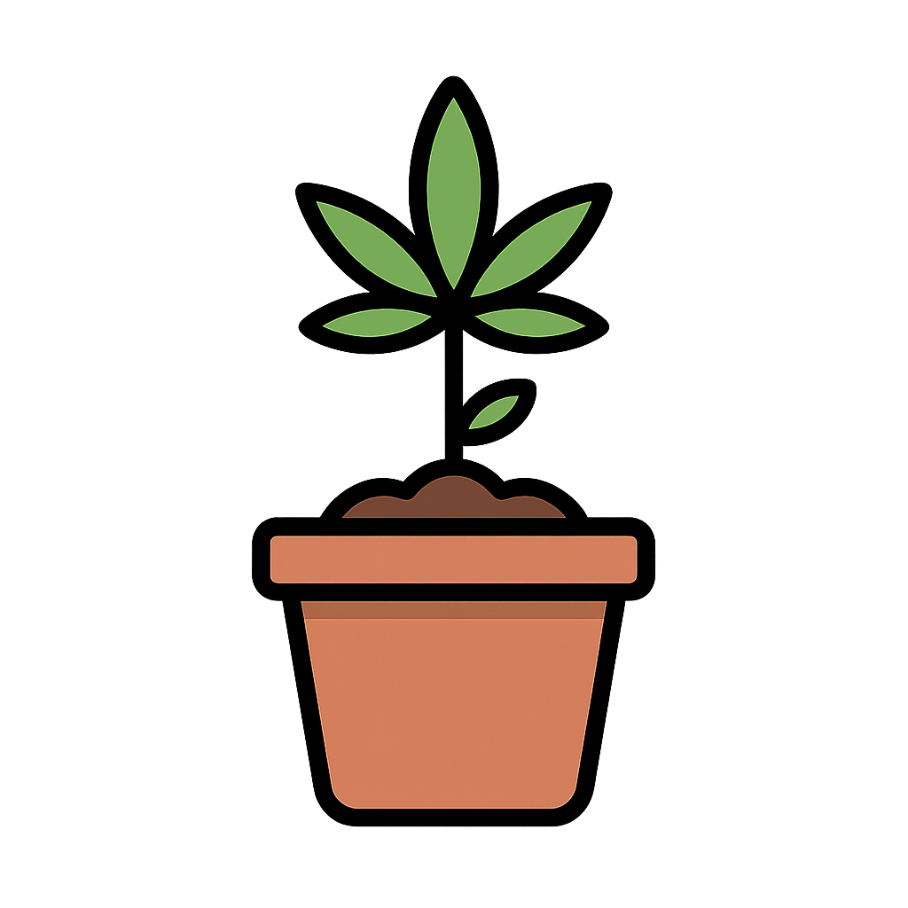

About Cannabis Health Hub
The Cannabis Digital Health Information Portal is an online platform designed to help users explore cannabis-related digital technologies. The Portal is designed to help users easily find cannabis-related mobile apps based on their needs and interests. By organizing and evaluating these digital tools, we aim to promote informed decision-making, support responsible cannabis use, and contribute to broader public health goals. As more individuals turn to mobile technologies for health and lifestyle guidance, this portal serves as a trusted entry point into the evolving landscape of cannabis-related digital resources.
In its current form, the portal features curated information about cannabis-related mobile apps, based on findings from a qualitative research study. Over time, it aims to grow into a comprehensive resource hub where individuals can discover, evaluate, and engage with a wide range of cannabis-related digital tools and resources. The portal is affiliated with the Cannabis Research Institute and the University of Illinois.
Go To PortalHow To Use This Portal
The Cannabis Digital Health Information Portal is designed to help users easily find cannabis-related mobile apps based on their needs and interests. Apps featured on the portal are broadly categorized into three main types:
Recovery
Recovery:
Apps that support individuals who are trying to pause, reduce, or stop using cannabis.
Cultivation
Cultivation:
Apps that assist users in growing cannabis or recognizing different cannabis plants and products.
Consumer
Consumer:
Apps aimed at those using cannabis for entertainment, wellness, or medical purposes.
Within these three categories, this portal also offers granular filters to help users find more specific types of content. These filters allow users to search by features such as location-based dispensary information, cannabis recipes, strain databases, and more—enabling a more tailored and informative experience.